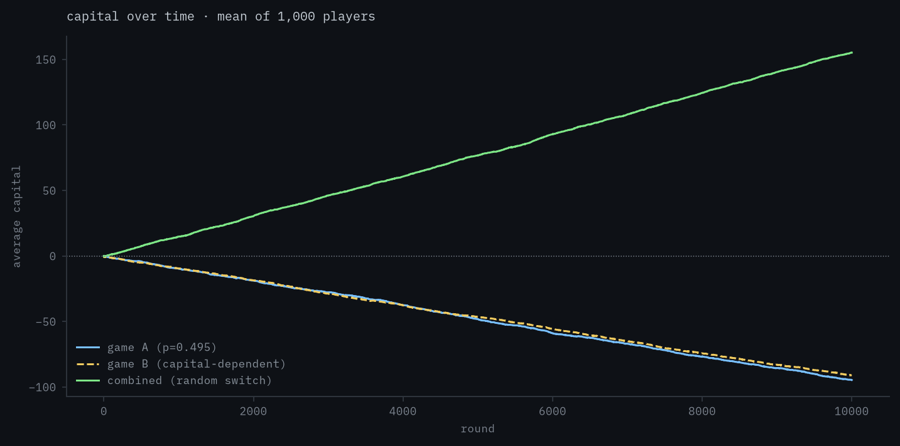
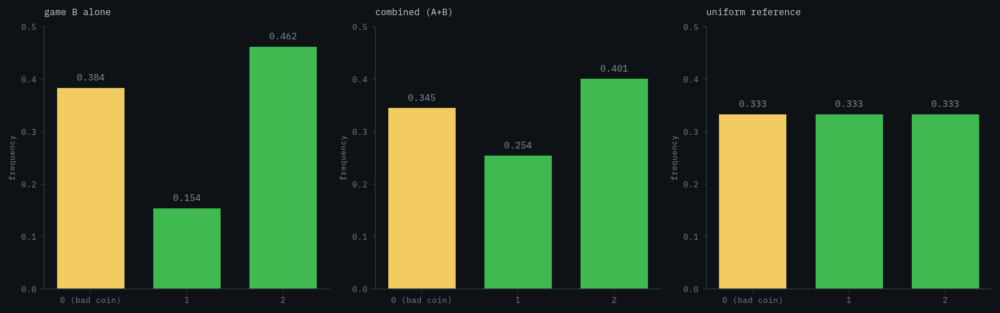
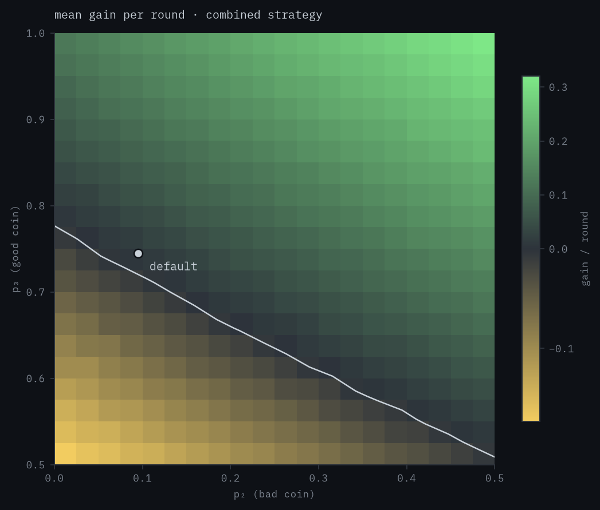

Say you have a friend who is a terrible gambler. He's found two games at the casino, and he has spreadsheets showing he loses money at both. Then one night he starts alternating between them at random, and his balance starts going up.
Before you stage an intervention: he might actually be onto something. This is Parrondo's paradox. The Spanish physicist Juan Parrondo came up with it in 1996, and Harmer & Abbott (1999) wrote it up properly a few years later. The short version is that two losing games can be combined into a winning one.
Game A is a slightly biased coin. You win $1 with probability p1 and lose $1 otherwise. I used p1 = 0.495, so it's just under fair and you lose money slowly.
Game B depends on how much money you have. If your capital is divisible by 3, you flip a bad coin that wins with probability p2 = 0.095. If it isn't, you flip a good coin that wins with probability p3 = 0.745.
p1 = 0.495 · p2 = 0.095 · p3 = 0.745
At first glance Game B looks like a winner, since two out of three capital values give you the good coin. The catch is that the game keeps steering you back to a multiple of 3. You end up on the bad coin more often than a third of the time, and those losses eat everything the good coin earns. So both games lose.
Here's the switching strategy: before each round, flip a fair coin and use it to pick A or B. I simulated 1,000 players for 10,000 rounds under each strategy.

A goes down. B goes down. The mix goes up.
Everything hinges on your capital mod 3. If you only play Game B, your capital mod 3 behaves like a Markov chain, and that chain settles into a long-run distribution that favours state 0 (the divisible-by-3 state with the bad coin). In my runs, players spent about 38% of their time there. A uniform split would be 33%, and that five-point difference is what makes B a losing game.
Game A ignores your capital mod 3, so mixing it in breaks up that pattern. Each A round nudges you to a neighbouring state more or less at random, which pulls you out of state 0 and puts you back on the good coin more often:

With B alone, you're in state 0 38.4% of the time. With the mix, it's 34.5%, closer to the uniform 33.3%. I was surprised how small that change is. It's still enough to turn a losing game into a winning one.
I wanted to know if this only works for one lucky set of probabilities, so I swept over p2 and p3 with p1 fixed at 0.495. The green region is where the combined strategy makes money:

The paradox holds across a decent chunk of the space above the contour line, so you don't need to tune the values precisely to see it.
The game logic is one short function:
def simulate(strategy, n_rounds, n_players, rng, p1=0.495, p2=0.095, p3=0.745):
capitals = np.zeros((n_players, n_rounds + 1), dtype=int)
cap = np.zeros(n_players, dtype=int)
for t in range(n_rounds):
if strategy == 'AB':
play_a = rng.random(n_players) < 0.5
else:
play_a = np.full(n_players, strategy == 'A')
p_b = np.where(cap % 3 == 0, p2, p3)
p_win = np.where(play_a, p1, p_b)
cap += np.where(rng.random(n_players) < p_win, 1, -1)
capitals[:, t + 1] = cap
return capitalsGame A uses one fixed probability. Game B looks at your capital mod 3 and picks a coin. The full simulation, including the code for the three figures, is in code.py.
The lesson I take from this is that you can't predict how a mix of random processes will behave by averaging their expected values. When the odds depend on the state you're in, switching between strategies changes how much time you spend in each state, and that can matter more than the odds themselves. Here, random switching knocks Game B out of a bad equilibrium, and that's all it takes.
Similar effects turn up in other places. In biology, a population can grow in an environment that keeps switching between two conditions, even if it would shrink under either one alone. In finance there's Shannon's demon. If you split your money between cash and a volatile stock and rebalance every day, the portfolio can grow even when the stock's expected return is zero. As with the game switching, the profit comes from how the price moves around, not which way it's heading.
So if your friend ever turns up with two losing games and a plan, it's worth checking his modular arithmetic before you call his family.